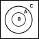

The homesteading principle, which is central to the question of how men attain a property right over some scarce means, is to be properly understood as implied directly by the Non-Aggression Principle. The primacy of the connection between a homesteader and the resource in question cannot be denied by anyone without contradiction, as a prior-later distinction is required for any thought or denial to take place.
[…] the first user and possessor of a good is either its owner or he is not. If he is not, then who is? The person who takes it from him by force? If forcefully taking possession from a prior owner entitles the new possessor to the thing, then there is no such thing as ownership, but only mere possession. But such a rule — that a later user may acquire something by taking it from the previous owner — does not avoid conflicts, it rather authorizes them.
—N. Stephan Kinsella1
This document is part of a course which you can find here. I provide the textual version for free to the public to make people aware of the facts contained within and to (hopefully) convince people to purchase the video course. This course is intended primarily as a video experience, and that is where my focus will be in terms of quality, so I do encourage you to check it out if this content is at all interesting to you. The course is sold on a pay-what-you-want model and is copyleft, meaning other people have the right to re-publish it at will. I simply encourage anyone who appreciates the work put into this course to purchase it such that I may make more in the future, and if you do choose to republish any section, please credit me and extend to your audience my request to purchase.
Now that the non-aggression principle has been demonstrated as an apodictically correct axiom of law some initial implications can be derived, the first of which is the homesteading principle, which can be stated as: ownership is assigned to the initial possessor/director of any external good, where homesteading is defined as initial possession (it is not particularly relevant whether you define homesteading as initial possession or initial direction, the initial possessor of a good is the one who initially directs the use of it, however I prefer the terminology of direction in most cases as will be made clear later). You will often see this described as the prior-later distinction, that is, the homesteading principle gives precedence to the first comer over any latecomers.
Consider Crusoe and Friday, stranded on a desert island. Crusoe comes across a stick in nature and homesteads it–i.e. takes initial possession of it–then he fashions it into a spear which he plans to use for spearfishing. On his way to the ocean, however, Friday sees this stick and thinks that it would be a useful tool to stoke his fire, and so he attempts to re-possess it–that is take it–from Crusoe. We have a conflict, Crusoe can’t spearfish at the same time that Friday stokes his fire, and it is intuitively clear that Friday has initiated this conflict.
First, it must be noted that ownership is necessarily distinct from direction, and this is pre-supposed as true by both Crusoe and Friday—in asserting different ownership claims they are saying that they are the ones who justly direct the use of the stick, i.e. if someone else tries to do so, that is unjust. We know this, because ownership itself is defined as just direction. Kinsella points out2 that the fact that ownership and direction3 are distinct implies that only first possession/direction is justifiable. If B can become the owner of a thing by merely taking it from A, that means that C could take it from B and thereby become the owner—but this would mean that the actual ability to direct the use of a thing and ownership of that thing are not distinct; whomever is able to control the stick would be the owner, and this contradicts the presumption by all parties that ownership and direction are distinct. Therefore, as it is a contradiction to propose that the latecomer has a property right, we are left with the initial director having the only justifiable claim to the property right—initial direction is the only just direction, and therefore it is only the homesteader who has the unique status of ownership.
In other words, we can see not only that Lockean homesteading […] is inextricably bound up with the prior-later distinction […] but that the very idea of ownership implies that only libertarian-style ownership is justifiable.4
So property rights are conflict avoiding norms and are assigned to the first-comer rather than any late-comer, and from this fact we can derive a corollary about the nature of a legitimate homesteading claim, namely that the borders of said homesteaded property must be objective and intersubjectively ascertainable. This fact becomes clear when we break it down into its constituent parts; firstly the borders of the homesteaded property must be objective, that is they must adhere to existence as against the arbitrary content of ones consciousness. This is because subjective property borders might contradict, and thus a subjective system of property rights is irrational and could not make for universal law, you will recall that law must be universal and objective to be rational.5 Consider a system of property rights based upon such arbitrary decrees, for example A having the right to punch B but B not having the right to punch A. This system would not be objective, neither A nor B could rationally derive such a rule, and as such you could not be expected to follow it, what this means is that an arbitrary system of property rights like this cannot avoid conflicts—it would rather authorise them.
Now we turn to the criterion that property borders must be intersubjectively ascertainable—what this means is that they are “public” and can be seen or in some other way perceived by third parties. The reason why rational property borders must be intersubjectively ascertainable is that if they are not they cannot serve to avoid conflicts, and property rights are conflict avoiding norms. Consider a non-intersubjectively ascertainable property border such as a mere verbal decree—Robinson Crusoe decides that he wants to own the moon so he simply shouts to the forest that he now owns the moon. Clearly this verbal decree cannot serve to avoid conflicts, when an astronaut is approaching the moon he has no means of discovering Crusoes supposed property right in the moon, thus Crusoe has not actually homesteaded the moon—he has not erected an objective, intersubjectively ascertainable border.
[…] no one could ever deny that norms for determining the ownership of scarce goods are useful for allowing conflict-free exploitation of such resources. But, as Hoppe points out, there are only two fundamental alternatives for acquiring unowned property: (1) by doing something with things with which no one else had ever done anything before, that is, the Lockean concept of mixing of labour, or homesteading; or (2) simply by verbal declaration or decree. However, a rule that allows property to be owned by mere verbal declaration cannot serve to avoid conflicts, since any number of people could at any time assert conflicting claims of ownership of a particular scarce resource. Only the first alternative, that of Lockean homesteading, establishes an objective […] link between a particular person and a particular scarce resource, and thus no one can deny the Lockean right to homestead unowned resources.6
What these criteria for rational property borders highlight is that communication lies at the very root of law. In homesteading a particular scarce resource you have to be able to somehow communicate to others that you are using it, if you fail at this you fail at your task of homesteading and cannot be said to own the thing in the first place.
An important edge-case must be analysed for this theory to be complete, namely the instance of Crusoe and Friday simultaneously attempting to take possession of a stick in nature. Clearly neither came prior to the other, so it is improper to describe either as a first- or late-comer. In this situation Crusoe and Friday are in a stalemate, where the term “stalemate” is used to indicate that this is not a conflict. From the definition of the hypothetical, we know that neither Crusoe nor Friday have actually started engaging in their chosen action with the stick, as in the first instant the stick was in nature, then the very next instant both Crusoe and Friday made an attempt to begin acting with it. This attempt is not yet complete and the action has not yet started until the other backs off.
Such a stalemate situation may turn into a conflict if either Crusoe or Friday forcefully excludes the other from completing their homesteading of the stick. This is a situation of the forceful one, say Crusoe, excluding the other from that which he does not own. This is an invasion from Crusoe against Friday, therefore Crusoe is the aggressor and not the proper owner of the stick. Clearly there is now a conflict over the use of the stick, else Crusoe would not be excluding Friday from the stick but from something else, and it is Crusoe who has initiated this conflict. Thus to forcefully exclude the other in a stalemate situation is to disqualify yourself from ownership of the good under stalemate, thereby ceding ownership to the other. The simpler case is when either Crusoe or Friday decide that they will back off on their own, thus non-aggressively breaking the stalemate and ceding ownership to the other, more stubborn man.
Now we must turn our attention to the Georgist anti-homestead ethic, which would claim that the first possessor also doesn’t have the ownership right, and in fact that homesteading itself is a crime against everyone else.7 This ethic fails on the grounds of its very proposal, to engage in argumentation one must first homestead something, at the very least their standing room. Before beginning any ethical deliberation you therefore must accept it to be just–that is to say argumentatively justifiable–to take initial possession and to therefore initially direct the use of some scarce physical means.
Hoppe explains that a latecomer ethic implies the death of humanity:8
What is wrong with this idea of dropping the prior-later distinction as morally irrelevant? First, if the late-comers, i.e., those who did not in fact do something with some scarce goods, had indeed as much of a right to them as the first-comers, i.e., those who did do something with the scarce goods, then literally no one would be allowed to do anything with anything, as one would have to have all of the late-comers’ consent prior to doing whatever one wanted to do. Indeed, as posterity would include one’s children’s children—people, that is, who come so late that one could never possibly ask them—advocating a legal system that does not make use of the prior-later distinction as part of its underlying property theory is simply absurd in that it implies advocating death but must presuppose life to advocate any thing. Neither we, our forefathers, nor our progeny could, do, or will survive and say or argue anything if one were to follow this rule. In order for any person—past, present, or future—to argue anything it must be possible to survive now. Nobody can wait and suspend acting until everyone of an indeterminate class of late-comers happens to appear and agree to what one wants to do. Rather, insofar as a person finds himself alone, he must be able to act, to use, produce, consume goods straightaway, prior to any agreement with people who are simply not around yet (and perhaps never will be). And insofar as a person finds himself in the company of others and there is conflict over how to use a given scarce resource, he must be able to resolve the problem at a definite point in time with a definite number of people instead of having to wait unspecified periods of time for unspecified numbers of people. Simply in order to survive, then, which is a prerequisite to arguing in favor of or against anything, property rights cannot be conceived of as being timeless and nonspecific regarding the number of people concerned. Rather, they must necessarily be thought of as originating through acting at definite points in time for definite acting individuals.
Furthermore, the idea of abandoning the prior-later distinction, which socialism finds so attractive, would again simply be incompatible with the nonaggression principle as the practical foundation of argumentation. To argue and possibly agree with someone (if only on the fact that there is dis agreement) means to recognize each other’s prior right of exclusive control over his own body. Otherwise, it would be impossible for anyone to first say anything at a definite point in time and for someone else to then be able to reply, or vice versa, as neither the first nor the second speaker would be independent physical decision-making units anymore, at any time. Eliminating the prior-later distinction then, as socialism attempts to do, is tantamount to eliminating the possibility of arguing and reaching agreement. However, as one cannot argue that there is no possibility for discussion without the prior control of every person over his own body being recognized and accepted as fair, a late-comer ethic that does not wish to make this difference could never be agreed upon by anyone. Simply saying that it could implies a contradiction, as one’s being able to say so would presuppose one’s existence as an independent decision-making unit at a definite point in time.
Above the homestead principle was defined as “ownership is assigned to the initial possessor/director of any external good.” This is important because the above analysis only works for goods which are external to the body of an acting man, it assumes that there are already acting men going into nature and extracting various goods from it. A persons body is an entirely different type of object, there aren’t bodies out in nature waiting for some “soul” to come along and homestead them. Rather a body is necessarily linked to an actor. It is this objective link which imbues a man with ownership. Homesteading is merely one form of demonstrating this link, so how do we deal with the case of establishing links between acting men and the bodies used for action?
Recall that property rights in general are conflict avoiding norms, that is to say, the very nature of ownership is to avoid conflicts. Recall also that this was derived from the nature of argumentation itself, so we can go back to argumentation to derive an assignment of property rights in bodies; for A and B to argue with each other, they have to first assume that the other guy owns himself, imagine if A tried to argue that B is actually owned by C. Well, this would mean that B would be a mere mouthpiece for C and thus A would actually be arguing with C which contradicts the presumption that A is arguing with B. Therefore, you could never propose that someone else is a slave without contradiction, in trying to demonstrate to this man that he is your or someone elses slave, you would have to first assume that he owns himself, then propose that you or someone else owns him—i.e. that he does not own himself. In other words, to engage in any argument whatsoever you have to first accept the validity of other mens claim to direct the use of their body, argumentation becomes impossible to the degree that you reject the validity of this.
Consider also the discussion above of the importance of property borders being objective and intersubjectively ascertainable. An implication of this is that particularistic norms such as A being allowed to punch B but not the other way around are false, similarly an arbitrary notion of one group owning another group must also be discarded. This is because you have an objective, undeniable-and-thus-intersubjectively-ascertainable link to your own body. To enslave someone the only way to control their body is indirectly via coercion–either physical or via threat–to get them to act how you want. In this case, the slave is still the one directly controlling their body which is a superior link to the indirect one that the enslaver has. If arbitrarily coercing others to do what you want constituted a greater claim over the body of the coerced person it would be impossible to avoid conflicts over bodies—we would rather have a system of might making right which is a conflict-authorising system of property, and thus not a rational system of property at all.
The enslaver also contradicts himself by recognising the precedence of this link over his own body by using his body to coerce his slave:
Moreover, any outsider who claims another’s body cannot deny this objective link and its special status, since the outsider also necessarily presupposes this in his own case. This is so because in seeking dominion over the other, in asserting ownership over the other’s body, he has to presuppose his own ownership of his body, which demonstrates he does place a certain significance on this link, at the same time that he disregards the significance of the other’s link to his own body.9
Furthermore, we consider that a slavery ethic–i.e. an ethic which rejects self-ownership–cannot make for a human ethic. To be an ethic for humanity, it must satisfy two properties; first, it must be universal, i.e. it must apply to all humans, and second, it must actually ensure the survival of mankind, or else it would be an anti-human ethic, and an anti-human ethic could not be proposed without contradiction as you must first presume that you should be alive and arguing. Rothbard has pointed out10 that if you do not have a system of total self-ownership, two possibilities remain:
Universal co-ownership fails on the grounds that it would imply the near immediate death of humanity because for any person to survive they must act, and if everyone is co-owned by everyone then any given person must first ask everyone elses permission before engaging in some action, but asking permission is itself an action, therefore everyone must immediately start doing nothing. Further, it is not strictly possible to purposefully not act, we note that action is defined as purposeful behaviour, so even in ceasing physical motion a man is acting insofar as this ceasing is done purposefully. Therefore, this ethic simply cannot be obeyed no matter what a man chooses to do, as choosing any option implies action.
Partial ownership of one group by another doesn’t necessarily mean the death of humanity, but it is not universal—instead of being an ethic for humans it is an ethic which implies a set of sub-humans ruled by humans. This is thus a particularistic ethic—it’s a norm of the form one rule for thee and another for me. But if the partial ownership ethic was truly rational it must be able to be derived from the nature of the entities that it applies to. Thus there would have to be some principled difference between the group of humans and the group of sub-humans. We know that legal ethics are derived from argumentation, and as such they would have to apply to all beings with the potential to argue. Therefore there could be no relevant difference between different groups of humans with respect to law, as all humans qua acting being have the potential to engage in argumentation. One could come up with any number of selection criteria to split mankind into different sets; perhaps one wants to split man into different races, or nations, or into northern and southern hemispheres, etc. The point of note is that these different groups do not have different logics—so any conclusions derived that apply to arguing beings as such would have to apply to all of them.
Now that we have a theory of property that accounts for both self-ownership and external ownership, we can begin to address some implications of this theory, the first of which is that ownership is necessarily individual—that is, group ownership is strictly impossible. Consider a set of people, {A, ⋯, Z}, who each commonly own a stick. What is to be done about a conflict over the use of this stick between A and B? There are two possibilities, either A is said to be the just victor, or B is. If A, then he owns the stick and B does not, if B then he owns the stick, and A does not. But both options contradict the presumption that every member in the set owned the stick, therefore group ownership simply cannot occur.
Allow me to go over some supposed solutions to this conundrum, the first of which is the democratic one. Essentially have all members within the set vote to determine who the just victor is—still, any who lost the vote did not own the stick, as their desired possession was considered unjust. Also consider the set which only consists of A and B, what vote could possibly be conducted between these men which would not come out as A in favour of A and B in favour of B? If B voted for A or vice versa there would be no conflict, and law studies only those set of situations where there is conflict rather than those where men are in harmonious agreement about how things should be done.
The next proposal for a solution comes from Roderick Long, he sates:11
On the libertarian view, we have a right to the fruit of our labor, and we also have a right to what people freely give us. Public property can arise in both these ways.
Consider a village near a lake. It is common for the villagers to walk down to the lake to go fishing. In the early days of the community it’s hard to get to the lake because of all the bushes and fallen branches in the way. But over time, the way is cleared and a path forms — not through any centrally coordinated effort, but simply as a result of all the individuals walking that way day after day.
The cleared path is the product of labor — not any individual’s labor, but all of them together. If one villager decided to take advantage of the now-created path by setting up a gate and charging tolls, he would be violating the collective property right that the villagers together have earned.
Public property can also be the product of gift. In 19th-century England, it was common for roads to be built privately and then donated to the public for free use. This was done not out of altruism but because the roadbuilders owned land and businesses alongside the site of the new road, and they knew that having a road there would increase the value of their land and attract more customers to their businesses. Thus, the unorganized public can legitimately come to own land, both through original acquisition (the mixing of labor) and through voluntary transfer.
So Long provides two cases that he sees as legitimate group property; (1) where a group communally “mix their labour” with an object in nature, and (2) where a man transfers ownership of his private property to a group in common. The issue with (1) is that Long relies on the faulty labour theory of property. It is not mixing labour with land which imbues a man with ownership, as we have seen it is the nature of scarcity giving rise to the potential for conflict which implies property rights. To demonstrate the failure of this theory more thorougly, allow me to quote Kinsella at length:12
As noted before, some libertarian IP advocates, such as Rand, hold that creation is the source of property rights. This confuses the nature and reasons for property rights, which lie in the undeniable fact of scarcity. Given scarcity and the correspondent possibility of conflict in the use of resources, conflicts are avoided and peace and cooperation are achieved by allocating property rights to such resources. And the purpose of property rights dictates the nature of such rules. For if the rules allocating property rights are to serve as objective rules that all can agree upon so as to avoid conflict, they cannot be biased or arbitrary. For this reason, unowned resources come to be owned—homesteaded or appropriated—by the first possessor.
The general rule, then, is that ownership of a given scarce resource can be identified by determining who first occupied it. There are various ways to possess or occupy resources, and different ways to demonstrate or prove such occupation, depending upon the nature of the resource and the use to which it is put. Thus, I can pluck an apple from the wild and thereby homestead it, or I can fence in a plot of land for a farm. It is sometimes said that one form of occupation is “forming” or “creating” the thing. For example, I can sculpt a statue from a block of marble, or forge a sword from raw metal, or even “create” a farm on a plot of land.
We can see from these examples that creation is relevant to the question of ownership of a given “created” scarce resource, such as a statue, sword, or farm, only to the extent that the act of creation is an act of occupation, or is otherwise evidence of first occupation. However, “creation” itself does not justify ownership in things; it is neither necessary nor sufficient. One cannot create some possibly disputed scarce resource without first using the raw materials used to create the item. But these raw materials are scarce, and either I own them or I do not. If not, then I do not own the resulting product. If I own the inputs, then, by virtue of such ownership, I own the resulting thing into which I transform them.
Consider the forging of a sword. If I own some raw metal (because I mined it from ground I owned), then I own the same metal after I have shaped it into a sword. I do not need to rely on the fact of creation to own the sword, but only on my ownership of the factors used to make the sword. And I do not need creation to come to own the factors, since I can homestead them by simply mining them from the ground and thereby becoming the first possessor. On the other hand, if I fashion a sword using your metal, I do not own the resulting sword. In fact, I may owe you damages for trespass or conversion.
Long’s second case, where a man transfers title to his property to some group, fails on the grounds that it does not resolve the contradiction, therefore making that contract invalid. Contract theory will be elucidated thorougly in a future lesson, so I will not explain this point too deeply here, just note that it will be seen that contract theory arises from property theory, and therefore you cannot have contracts which allow for contradictory property claims, Long is essentially putting the cart before the horse.
A further potential solution for group property rights is the polycentrist solution.13 To the polycentrist, law in a libertarian society is decided by reference to competing arbitrators, these judges could settle disputes and thus determine the arrangement of property. So for our above example of {A, ⋯, Z} all collectively owning a stick, they would simply have to go to some judge to decide who has just possession. The problem with this is first that it is confused about the nature of law—justice cannot be decreed by man, rather it depends on the normative structure of argumentation. And second, the contradiction is still not resolved, if this Judge rules in favour of A, B did not own the stick and vice versa.
Companies are often forwarded as a counterexample to this thesis—it is said that multiple people can come together and own shares in a given enterprise and thus communally own said enterprise. This counterexample is confused about what a company is—men do not go out into nature and find companies which they then homestead, rather companies are specific relationships between men, they are constructed via a web of contracts. Just as a person cannot own friendship or marriage they cannot own a firm, not legally at least. The specific property being directed by the company must be owned by a single individual, perhaps the CEO or another such person. This does not mean the CEO can do whatever he wishes with this property, it may be the case that there is a contract such that if he uses the property for purposes contrary to the shareholders voted-upon goal then the title to that property is transferred to some other person who then becomes the CEO. Nowhere in such a conception is any property owned by multiple people.
There is a potential conundrum for this theory of homesteading which goes as follows:
14
There are three sections of land, 𝔸, 𝔹, and ℂ as pictured. Crusoe comes along and homesteads 𝔸. Friday currently resides somewhere in ℂ. Because Crusoe does not own 𝔹, Friday does not have a duty to Crusoe to not enter it. And because Crusoe does own 𝔸, Friday does have a duty to Crusoe to not enter 𝔸. So, Friday is allowed to enter 𝔹, but not 𝔸. However, due to the donut shape of Crusoes homestead, to enter 𝔹 implies entering 𝔸, hence, a contradiction arises—Friday both has a duty not to enter 𝔹 and he does not have said duty. That is to say, Crusoe is acting like he is the owner 𝔹 of when he is in fact not—this is called forestalling. The proposed solution put forward by those in the Walter Block camp is the Blockean Proviso. Essentially, they claim that the contradiction arises from assuming that Crusoe has indeed homesteaded all of 𝔸, therefore to resolve the contradiction these donut homesteads must be disallowed. This formulation, provided by Łukasz Dominiak, resolves a counterargument made by Kinsella,15 where he imagines that the donut is not owned by Crusoe himself, but by 100 Crusoes we could call Crusoe1 through to Crusoe100, which of these individual segments does Friday have the right to cross over and why not any of the others? Surely if they each sequentially homesteaded their individual segments, none of them are individually forestalling. The solution to this is that it is Crusoe100, who seals up the donut who has committed a crime, as he was not able to homestead that final section.
However, there is a way to resolve this contradiction without any need for a proviso, as Kinsella writes in defense of embordering-as-homesteading, utilising de Jasay’s “let exclusion stand” principle:16
In a nutshell: de Jasay equates property with its owner’s “excluding” others from using it, for example by fencing in immovable property (e.g. land) or finding or creating (and keeping) movable property. Thus, the principle means “let ownership stand,” i.e., that claims to ownership of property appropriated from the state of nature or acquired ultimately through a chain of title tracing back to such an appropriation should be respected. De Jasay uses this idea to demolish the criticism that homesteading unowned resources unilaterally and unjustifiably imposes on others moral duties to refrain from interfering.
I.e. it is the very nature of property itself that the owner excludes others from using it, we can then say that Crusoe in excluding others from accessing this previously unowned territory 𝔸, thereby becomes its owner. It is this act of exclusion which is Crusoe initially directing the use of both the donut and the donut-hole. This idea of “let exclusion stand” sheds light also on the falsehood of the notion that property rights must be limited because if they were not I would be permitted to use my gun to shoot an innocent man. This is false because my property right in that gun does not mean that I am allowed to use that gun for whatever I want, it means that I have a right to exclude people from using the gun for what they want. This isn’t particularly surprising either, I would also not be permitted to use a stolen gun to shoot someone, who owns the gun being used for the shooting isn’t relevant to the question of whether the shooting is just or not. Kinsella goes on:
Note that the de Jasayan idea of “let exclusion stand” or the Hoppean idea that the prior-later distinction is of crucial importance also sheds light on the nature of homesteading itself. Often the question is asked as to what types of acts constitute or are sufficient for homesteading (or “embordering” as Hoppe sometimes refers to it); what type of “labor” must be “mixed with” a thing; and to what property does the homesteading extend? What “counts” as “sufficient” homesteading? Etc. And we can see that in a way the answer to these questions is related to the issue of what is the thing in dispute. In other words, if B claims ownership of a thing possessed (or formerly possessed) by A, then the very framing of the dispute helps to identify what the thing is and what counts as possession of it. If B claims ownership of a given resource, he must want the right to control it according to its nature. Then the question becomes, did someone else previously control it (according to its nature); i.e., did someone else already homestead it, so that B is only a latecomer? This ties in with de Jasay’s “let exclusion stand” principle, which rests on the idea that if someone is actually able to control a resource such that others are excluded, then this exclusion should “stand.” Of course, the physical nature of a given scarce resource and the way in which humans use such resources will determine the nature of actions needed to “control” it and exclude others.
De Jasay, as a matter of fact, considers two basic types of appropriation: “finding and keeping” and “enclosure.” The former applies primarily to movable objects that may be found, taken, and hidden or used exclusively. Since the thing has no other owner, prima facie no one is entitled to object to the first possessor claiming ownership.
For immovable property (land), possession is taken by “enclosing” the land and incurring exclusion costs, e.g., erecting a fence (again, similar to Hoppe’s “embordering”—establishing an objective, intersubjectively ascertainable border). As in the case with movables, others’ loss of the opportunity to appropriate the property does not give rise to a claim sufficient to oust the first possessor (if it did, it would be an ownership claim).
So in the case where Friday is in ℂ, Crusoe instantly becomes the owner of both 𝔸 and 𝔹 after he completes his embordering. In the case where Friday is in 𝔹, assuming nobody else is in ℂ, Crusoe would become the immediate owner of both 𝔸 and ℂ, but what of the case where there are people or homesteaded property in both 𝔹 and ℂ? In that situation, it becomes clear that Crusoe would indeed be forestalling in fencing off 𝔸, as he could not become the owner of the owned property on either side of his border. That is to say, this type of fencing off, would be claiming possession of not unowned land, but of the owned property of others.
I have come to recognise a slight terminological problem regarding the definition of “ownership.” Initially for this course I defined ownership as just possession, that is to say that A owns α if A can justify his possession of α. This terminology strikes me as being entirely reasonable on its face, and for some purposes–such as the discussion of homesteading above–it works perfectly fine.
However, there are some issues with using “just possession” as your definition of ownership. First how does one apply this terminology to situations where there is no conflict and yet the owner of a thing is not in possession of it. Consider inviting your friend over to watch some TV, your friend sits on your sofa and thus he is engaged in some partial possession of the sofa, and of the sitting room. Given there is no conflict, could you ask your friend to leave if you no longer want him to sit there? Well, he was able to justify his possession of his sitting room so did he not therefore own it? And if he owns it, what right have you to tell him to leave?
This issue could be solved through some notion of antecedent vs descendant property rights,17 i.e. your property right in the sofa and the sitting room is antecedent to your friends right, and the antecedent right must prevail in a given conflict. I have no particular issues with others using this terminology, but it would make the wording of the above proof that ownership is exclusive a little bit tedious for my liking. As such in this course I shall use the terminology that ownership is just direction, which is analogous to de Jasay’s idea that ownership of a thing involves controlling it and it is also reminiscent of the Misesian definition of socialism as being a society wherein a single will directs the factors of production. Furthermore defining ownership in terms of who has the right to control or direct a given property will be useful in later lessons when describing the right to retribute and the right of guardianship as property rights—these things are scarce and so our property theory has to cover them, but they aren’t physical, so it is odd to describe them in terms of possession.
This course would be incomplete without at least a brief treatment of so-called intellectual property rights, though this section will indeed be brief as I already have an extensive video going over the topic.18 All that shall be covered here is a proof that intellectual property rights are impossible and are rather monopoly grants and a brief demonstration that said intellectual monopoly grants are per se criminal.
First to demonstrate that “intellectual property rights” are impossible, consider the nature of property. To say that person A has a property right in X is to say that he should win any conflict over the use of X. The issue with so-called intellectual property then is that ideas are not scarce, so there cannot possibly exist property rights over ideas. If Crusoe finds a stick in nature and figures out how to use it to fish, his use of the stick excludes Friday, but his use of the idea of spearfishing does not—Friday is fully capable of finding a different stick and using that to spearfish at the exact same time. We notice that Friday needs to find a different stick, but he does not need to find a different idea. One person having an idea excludes nobody else from having that same idea, so conflicts over ideas are strictly impossible.
Should Crusoe exclude others from using this idea of spearfishing, he is not acting in defense of a property right, therefore. Instead he is criminally threatening and/or attacking others who want to spearfish. If a man comes up with a mousetrap design and patents it, then claims to everyone else that they are now not allowed to make this type of mousetrap, he is indirectly threatening everyone else with violence, through the use of the state. Intellectual property therefore constitutes a criminal threat, and crime is something to be opposed.
Furthermore, to adopt a consistent intellectual property ethic is to accept ethical stasis—the IP ethic could be stated that any latecomer to an idea must ask the firstcomer to that idea–or their heir–for permission before using it. But then anyone who is not the first person to get the idea to ask permission to use ideas must first ask his permission to ask permission, which they cannot do without first asking permission to ask permission to ask permission, and so on ad infinitum. The IP ethic, then, implies the near immediate cessation of all action, and thus implies the death of humanity, so the IP ethic simply cannot make for a human ethic.
1 N. Stephan Kinsella, Thoughts on the Latecomer and Homesteading Ideas; or, why the very idea of “ownership” implies that only libertarian principles are justifiable, https://mises.org/wire/thoughts-latecomer-and-homesteading-ideas-or-why-very-idea-ownership-implies-only-libertarian (archived).
2 ibid.
3 Kinsella uses the terminology of “possession,” but as explained this distinction is not important for the case made here.
4 ibid.
5 See LiquidZulu, “The Nature of Law,” in idem. The Fundamentals of Libertarian Ethics.
6 N. Stephan Kinsella, “Argumentation Ethics,” in idem. Dialogical Arguments for Libertarian Rights.
7 See LiquidZulu, Georgists Don’t Understand Rights, https://youtu.be/1iH4FqMDE0Y
8 Hans-Hermann Hoppe (1988), “The Ethical Justification of Capitalism and Why Socialism Is Morally Indefensible,” pp. 169-171, in idem. A Theory of Socialism and Capitalism.
9 N. Stephan Kinsella, How We Come to Own Ourselves, https://mises.org/library/how-we-come-own-ourselves (archived).
10 Murray Rothbard (1982), “Interpersonal Relations: Ownership and Aggression,” in idem. Ethics of Liberty; see also Hans-Hermann Hoppe (1998), introduction to Ethics of Liberty.
11 Roderick T. Long (1996), “The Ethical Argument,” in idem. In Defense of Public Space.
12 N. Stephan Kinsella, Against Intellectual Property, pp. 36–38
13 See my video David Friedman is Not an Ancap for more on this: https://www.youtube.com/watch?v=DRA6rLvHARE
14 This diagram comes from Łukasz Dominiak (2017), The Blockian Proviso and the Rationality of Property Rights.
15 Łukasz Dominiak (2017), The Blockian Proviso and the Rationality of Property Rights citation (Long 2007).
16 N. Stephan Kinsella, Thoughts on the Latecomer and Homesteading Ideas; or, why the very idea of “ownership” implies that only libertarian principles are justifiable, https://mises.org/wire/thoughts-latecomer-and-homesteading-ideas-or-why-very-idea-ownership-implies-only-libertarian (archived).
17 Such an idea is used in: Kris Borer (2010), “The Human Body Sword,” Libertarian Papers 2, 20.
18 See LiquidZulu, Why Artists Shouldn’t Own Their Art, https://www.youtube.com/watch?v=4xKjHHzLUQQ